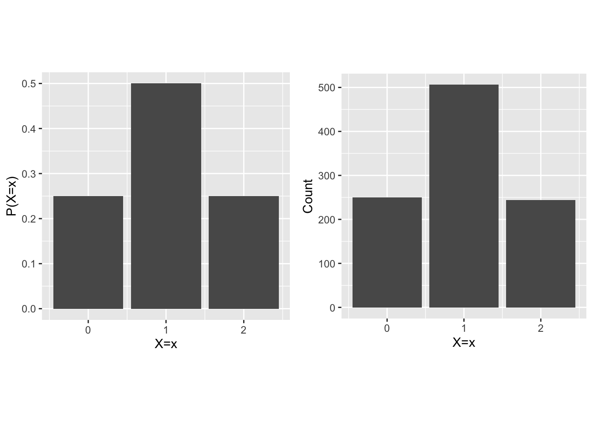
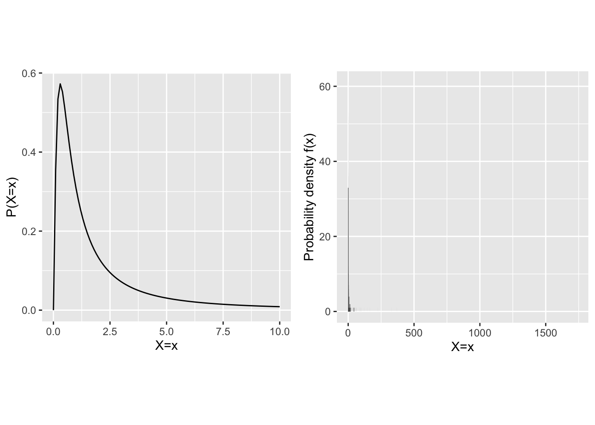
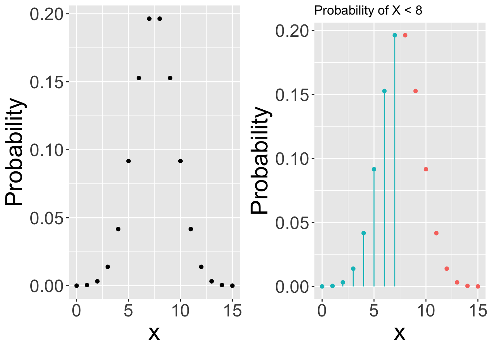

7 Probability fundamentals
The foundation of statistics is built on the modeling of real-world phenomena through random variables, which in turn are characterized by sample spaces and probability distributions. Here we dive a bit deeper into the formal aspects of probability theory so that we may better use and interpret statistical models.
7.1 Fundamental Concepts
The sample space of an experiment is the set of all possible outcomes of that experiment.
An outcome is a possible result of an experiment.
An event is a set of outcomes of an experiment.
An elementary event is an event which contains only a single outcome in the sample space.
7.1.1 Example: Coin Flip Experiment
Consider flipping a coin twice, leading to these possible outcomes:
| Outcome # | 1st Flip | 2nd Flip |
|---|---|---|
| 1 | H | H |
| 2 | H | T |
| 3 | T | H |
| 4 | T | T |
Here, the sample space is \(\{(H,H), (H,T), (T,H), (T,T)\}\).
Each individual row is a possible outcome.
An example event could be \(\{(H,H), (T,T)\}\), representing getting the same side in both flips. Notice that it is composed of two individual outcomes.
An elementary event, such as \(\{(H,H)\}\), specifies a single outcome from the sample space.
7.1.2 Probability Defined
Probability is simply the likelihood of an event occurring. if the sample space is discrete, and the likelihood of each outcome is equal, then the probability of an event is simply the proportion of outcomes contained by that event relative to all possible outcomes. A similar definition for probability holds if the space of possible outcomes is continuous, but there are a few interesting and not immediately intuitive little kinks that we will need to deal with. For instance, if the sample space is continuous, then the probability of any any single event is actually zero (more on this in a later lecture).
7.2 Probability Rules
Probabilities range between \(0\) and \(1\) (\(0 \leq P(e) \leq 1\) for any event \(e\)).
The sum of probabilities for all outcomes in the sample space equals \(1\).
The probability of an event not happening is \(P(\neg e) = 1 - P(e)\).
For mutually exclusive events (i.e., events that share no outcomes), the probability of any event occurring is the sum of their individual probabilities:
\[ P(E) = P(e_1 \cup e_2 \ldots \cup e_n) = P(e_1) + P(e_2) + \ldots + P(e_n) \]
7.2.1 Independence, Intersection, and Union
Events \(e_1\) and \(e_2\) are independent if the occurrence of one does not affect the likelihood of the other, defined as \(P(e_1 \cap e_2) = P(e_1)P(e_2)\).
The notation \(P(e_1 \cap e_2)\) denotes the probability of \(e_1\) and \(e_2\) happening, highlighting the intersection of events.
The notation \(P(e_1 \cup e_2)\) denotes the probability of either \(e_1\) or \(e_2\) happening, highlighting the union of events.
7.2.2 Validating Probability Sets
Let \(A\), \(B\), \(C\) share no outcomes and be the possible events of an experiment with the following probabilities of occurrence:
\[ P(A) = 0.4 \\ p(B) = 0.3 \\ P(C) = 0.3 \\ \]
This is a valid set of probabilities because they obey:
\(0 < P < 1\)
\(P(A) + P(B) + P(C) = 1\)
Now suppose that we are told:
\[ P(A \cup B) = 0.6 \\ P(A \cup C) = 0.7 \\ P(B \cup C) = 0.6 \\ \]
This does not obey the rules of probability because we are told that they do not share any outcomes and yet all union probabilities are not equal to the sum of their parts (e.g., \(P(A \cup B) \neq P(A) + P(B)\)).
7.3 Probability distributions
If \(X\) is a random variable, then the probability distribution of \(X\) is a function that gives the probability that \(X\) will yield on a particular value when it is sampled. It is very imoprtant to emphasise that a probability distribution specifies the probability of every possible outcome the random variable can take.
7.3.1 Example: Discrete random variable
Lets return to our coin flip experiment in which we flip a coin twice. The sample space for the experiment is given by the following table:
| Outcome # | 1st Flip | 2nd Flip |
|---|---|---|
| 1 | H | H |
| 2 | H | T |
| 3 | T | H |
| 4 | T | T |
Now, let \(X\) be the random variable that counts the number of heads in the experiment. The probability distribution of \(X\) is given by the following table:
| \(x\) | \(P(X=x)\) |
|---|---|
| 0 | 0.25 |
| 1 | 0.5 |
| 2 | 0.25 |
Note that here we have assumed that coin is fair and that the P(H) = P(T) = 0.5. With this assumption we are able to compute the probability of each outcome in the sample space by adding the number of heads in each row of the sample space table and divding by the total number of rows. Also, note that \(X\) cannot yield fewer than zero heads or more than two heads, so the probability distribution of \(X\) is fully specified by the above table. Lets plot the probability distribution of \(X\) and also draw a few samples from \(X\).

As in previous examples we see that the majority of the samples are clustered around the outcomes associated with the highest probability in the probability distribution.
7.3.2 Example: Continuous random variable
Lets return to our reaction time experiment in which we have a random variable \(X\) that measures the time it takes for a person to react to a stimulus. The sample space of this experiment is the set of all real numbers greater than zero which is both continuous and infinite. This means that we cannot specify the probability of every possible outcome using a table as we did for the discrete random variable. We can howeber visualise it using a plot. Lets assume that the probability distribution of \(X\) is given by the following plot:

We again see that the majority of the samples are clustered around the outcomes associated with the highest probability. However, note that there is an important twist here. Notice that the y-axis of the plot of the probability distribution is labelled probability density f(x) and not simply P(X=x). This is because when \(X\) is continuous \(P(X=x)=0\) for all \(x\). The \(f(x)\) label refers to probability density. This is a very cool and counterintuitive idea that has important implications for how we interact with probability distributions. We turnt to this next.
7.4 Computing probabilities from probability distributions
With discrete probability distributions, we were able to compute the probability of certain events by counting the total number of ways for an outcome to occur and dividing by the total number of possible outcomes. However, for continuous probability distributions, this method doesn’t work. To see this, consider the continuous distribution associated with the simple reaction time experiment in the previous section.
Suppose we are interested in \(p(X=1)\). We first need to count the number of ways for an outcome to occur. For \(p(X=1)\) – a single outcome – there is just one way. Next – assuming equal probability of all outcomes (not a good assumption in this case but this is the least of our troubles at the moment) – we need to divde by the total number of possible outcomes. However, since \(X\) is continuous, there are an infinite number of possible outcomes. So we are left dividing one by infinity. Any real number divided by infinity is zero. So here lies our problem. The probability of any single outcome in a continuous distribution is zero.
Perhaps the situation improves if instead of asking about the probbaility of single outcomes, we ask about the probability of ranges of outcomes. For example, what is the probability that \(X\) is less than \(1\)? How many ways are there for \(x\) to be less than \(1\)? Since \(x\) is continuous, there are infinite ways for this occur! What about the total number of possible outcomes? Right. Infinity again. So we are left dividing one infinity by another infinity. Quite a confusing and ill-defined situation.
7.4.1 Discrete distributions
With discrete probability distributions – also called probability mass functions (pmfs) – finite and well-defined probabilities exist for every single possible outcome. This means that you can plot the distribution, and read probabilities right off the y-axis of the plot.

7.4.2 Continuous distributions
With continuous probability distributions – aslo called probability density functions (pdfs) – the probability of any single outcome is zero. The distribution represents probability density rather than probability. In this case, probability is computed by taking the area under the curve.